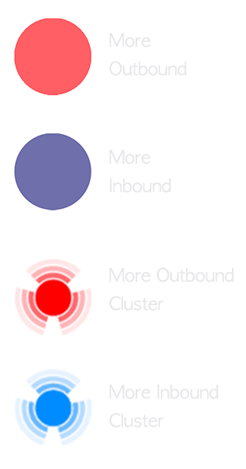

USING HUBWAY DATA TO UNDERSTAND AND OPTIMIZE PEOPLE’S TRANSIT
This interactive website presents the analysis of the current gaps between existing MBTA routes and frequent Hubway paths in Cambridge, MA
Data source: Cambridge public transportation lively routes from MBTA; 2017 annual behaviour of Hubway riders between stations from Hubway official website by month.
